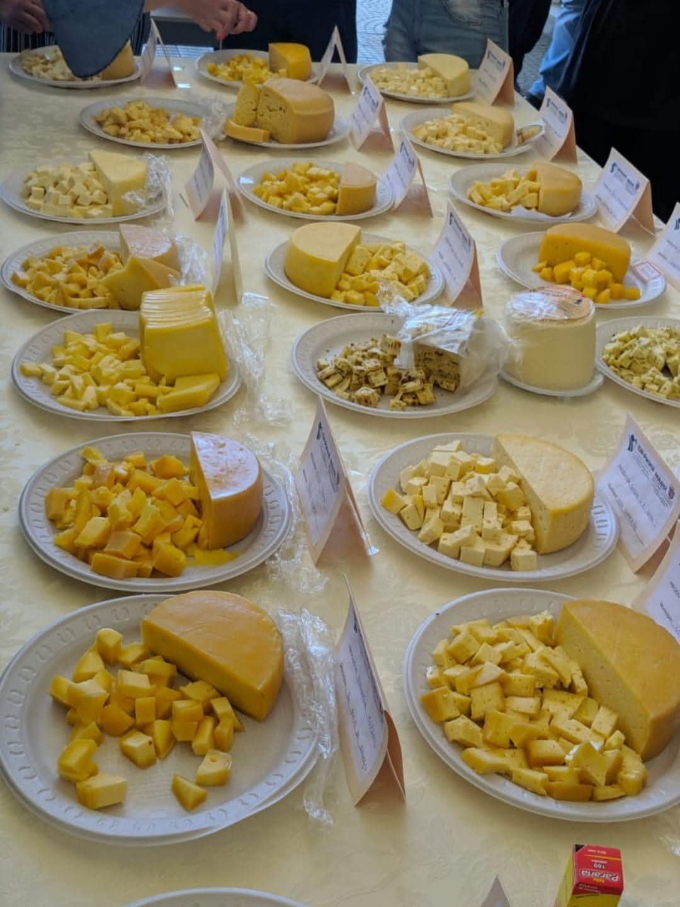

O comércio e a distribuição de produtos rurais desempenham um papel essencial na conexão entre o campo e a cidade. Toda a cadeia que envolve o transporte, o armazenamento e a venda dos alimentos e matérias-primas agrícolas garante que a produção rural chegue com qualidade, segurança e no tempo certo às mesas urbanas. Além de abastecer as cidades, esse processo movimenta a economia, gerando empregos, renda e desenvolvimento nas comunidades rurais.
O trajeto de um produto agrícola, como o milho, o leite ou os hortifrútis, é longo e complexo. Ele passa por etapas como o beneficiamento, a classificação, o empacotamento e o transporte, antes de chegar aos centros de distribuição, feiras livres, supermercados e indústrias de transformação. Cada elo dessa cadeia precisa funcionar de forma eficiente para evitar desperdícios, garantir a conservação dos alimentos e manter preços acessíveis ao consumidor final.
O avanço da tecnologia tem modernizado a logística rural, com o uso de sistemas de rastreamento, transporte refrigerado e plataformas digitais de comercialização. Hoje, muitos agricultores contam com o apoio de cooperativas, associações e programas de incentivo que facilitam o acesso aos mercados consumidores, eliminando intermediários e aumentando a lucratividade para o produtor.
Além dos produtos alimentícios, o comércio rural também envolve a venda de insumos agrícolas, como sementes, fertilizantes, defensivos e máquinas, criando um ciclo econômico que beneficia tanto produtores quanto consumidores. A integração eficiente entre produção, transporte e comercialização é o que mantém o equilíbrio entre oferta e demanda, garantindo segurança alimentar e fortalecendo a economia nacional.
Principais Etapas do Comércio e da Distribuição
Etapa
Descrição
Participantes Envolvidos
Importância
Produção
Cultivo de alimentos e criação de animais nas propriedades rurais.
Movimenta a economia e gera renda para os produtores.
Tecnologia e Logística
Uso de ferramentas modernas para gestão de estoques, rastreamento e controle de qualidade.
Empresas de tecnologia agrícola, serviços de logística, startups do agronegócio.
Aumenta a eficiência, reduz custos e melhora a rastreabilidade dos produtos.
Mercados de Destino
Locais onde os produtos rurais são vendidos ou transformados.
Centros de distribuição, supermercados, indústrias alimentícias, exportadoras.
Permite que os produtos cheguem ao consumidor final, tanto no mercado interno quanto externo.
Canais de Comercialização da Produção Agropecuária
Os canais de distribuição rural representam os diversos meios pelos quais os produtos agrícolas e pecuários saem das propriedades rurais e chegam aos consumidores nas cidades. Cada canal possui suas características, públicos-alvo e estrutura logística, formando uma rede essencial para o abastecimento alimentar e o fortalecimento da economia rural.
Feiras Livres:
As feiras livres são uma das formas mais tradicionais de comercialização direta entre produtores rurais e consumidores urbanos. Realizadas semanalmente em diferentes bairros, oferecem alimentos frescos como frutas, verduras, legumes, ovos e produtos caseiros. As feiras fortalecem a economia local, promovem o consumo de produtos sazonais e reduzem a necessidade de intermediários.
Mercados Municipais:
Os mercados municipais funcionam como grandes centros de venda de produtos rurais. São locais fixos que concentram diversos comerciantes, oferecendo variedade, qualidade e preços acessíveis. Além de alimentos frescos, muitos mercados também vendem produtos artesanais e itens típicos da cultura regional, sendo importantes pontos de encontro entre campo e cidade.
Cooperativas Agrícolas:
As cooperativas agrícolas são associações de produtores que trabalham em conjunto para produzir, armazenar e comercializar seus produtos. Elas oferecem vantagens como maior poder de negociação, acesso a mercados maiores, melhores condições de transporte e armazenamento coletivo. Além disso, promovem capacitação técnica e apoio financeiro aos agricultores associados.
Distribuidoras e Atacadistas:
Distribuidoras e atacadistas compram grandes volumes de produtos diretamente dos produtores ou cooperativas, realizando o transporte e a redistribuição para supermercados, restaurantes, indústrias e outros pontos de venda. Essas empresas são fundamentais para atender a demanda de grandes centros urbanos, oferecendo infraestrutura de armazenamento, transporte refrigerado e logística eficiente.
Agroindústrias Locais:
As agroindústrias locais são responsáveis por transformar a matéria-prima rural em produtos industrializados com maior valor agregado, como queijos, embutidos, geleias, doces caseiros e conservas. Esses produtos são vendidos tanto no mercado regional quanto em redes de comércio maiores, incentivando o desenvolvimento da economia local e gerando emprego nas áreas rurais.
A escolha do canal de distribuição depende de fatores como tipo de produto, volume de produção, distância até os centros urbanos e condições logísticas. Muitos produtores optam por utilizar múltiplos canais ao mesmo tempo, ampliando suas oportunidades de venda e diversificando os mercados atendidos. Uma rede de distribuição eficiente garante o abastecimento contínuo das cidades e contribui para o desenvolvimento sustentável do campo.
O Caminho até o Consumidor
Imagem ilustrativa: Transporte de produtos rurais para os centros urbanos.
A logística rural é uma etapa fundamental no processo de comercialização de produtos agrícolas. Ela envolve todas as atividades necessárias para que os alimentos, matérias-primas e produtos industrializados do campo cheguem de forma segura, rápida e com qualidade aos consumidores das cidades. No entanto, essa logística enfrenta diversos desafios que exigem soluções criativas e o uso de tecnologias modernas.
Transporte de Mercadorias:
O transporte é uma das principais etapas da logística rural. Em muitas regiões, os produtores precisam percorrer longas distâncias até os centros de distribuição ou mercados consumidores. A falta de frota própria, os altos custos com combustível e a necessidade de veículos adaptados, como caminhões refrigerados, são algumas das dificuldades enfrentadas. Muitos produtores recorrem a cooperativas ou empresas terceirizadas para viabilizar o transporte em escala.
Armazenamento e Refrigeração:
Produtos perecíveis, como frutas, verduras, leite e carnes, precisam de armazenamento adequado para manter sua qualidade. A carência de armazéns climatizados ou câmaras frias em áreas rurais é um obstáculo frequente. Soluções como o armazenamento coletivo em cooperativas e o investimento em tecnologias de refrigeração móvel têm ajudado a reduzir perdas durante o processo logístico.
Estradas e Infraestrutura:
Um dos maiores desafios da logística rural é a infraestrutura precária. Muitas estradas de acesso às propriedades agrícolas são de terra e ficam intransitáveis em épocas de chuva. Isso encarece o transporte, aumenta o tempo de entrega e pode causar prejuízos com a perda de carga. Investimentos em pavimentação rural, manutenção de estradas vicinais e criação de rotas alternativas são algumas das soluções buscadas por governos e cooperativas.
Tecnologia na Logística:
A tecnologia tem revolucionado a logística rural. O uso de aplicativos de rastreamento permite que produtores acompanhem em tempo real a localização de suas cargas. Sistemas de gestão logística ajudam a planejar rotas mais eficientes, calcular custos e prever prazos de entrega. Além disso, plataformas digitais de venda direta ao consumidor estão encurtando os caminhos entre o campo e a cidade, reduzindo a dependência de intermediários.
Uma logística rural eficiente é essencial para garantir a competitividade do produtor, reduzir perdas pós-colheita e assegurar que os alimentos cheguem frescos e com qualidade até o consumidor final. O investimento em infraestrutura, capacitação e tecnologia é o caminho para superar os desafios e tornar o campo cada vez mais integrado ao mercado urbano.
Importância da Agricultura Familiar e de Pequenas Agroindústrias
A agricultura familiar desempenha um papel fundamental na produção de alimentos e na segurança alimentar das populações urbanas e rurais. No Brasil, segundo dados oficiais, a agricultura familiar é responsável por cerca de 70% dos alimentos que chegam à mesa dos brasileiros. Essa modalidade de produção é caracterizada por pequenas propriedades, gestão familiar, uso de mão de obra própria e grande diversidade de culturas.
Agricultura Familiar:
Os agricultores familiares cultivam uma variedade de produtos, como frutas, legumes, hortaliças, grãos, leite e ovos. Eles utilizam técnicas de cultivo adaptadas à realidade local, com foco na sustentabilidade e na preservação ambiental. Muitas vezes, a produção é diversificada para garantir segurança financeira, com o excedente sendo comercializado em mercados locais ou através de programas governamentais.
Sistemas de Compras Coletivas:
Para fortalecer a comercialização e garantir mercado para a produção, muitos agricultores familiares participam de programas de compras públicas. No Brasil, dois exemplos importantes são:
PAA (Programa de Aquisição de Alimentos):
Criado para incentivar a agricultura familiar, o PAA permite que órgãos públicos adquiram alimentos diretamente dos pequenos produtores. Esses alimentos são destinados a instituições como escolas, creches, asilos e comunidades em situação de vulnerabilidade social. Além de gerar renda, o programa contribui para a segurança alimentar.
PNAE (Programa Nacional de Alimentação Escolar):
O PNAE determina que pelo menos 30% dos recursos destinados à merenda escolar sejam utilizados na compra de produtos da agricultura familiar. Isso cria um mercado estável para os produtores locais e garante alimentos mais frescos e saudáveis para os alunos da rede pública de ensino.
Vendas Diretas ao Consumidor:
Muitos pequenos produtores optam por comercializar seus produtos de forma direta, sem intermediários. Essa prática aumenta a margem de lucro e cria um vínculo mais próximo entre quem produz e quem consome.
Cestas de Alimentos:
Os agricultores organizam cestas contendo uma variedade de produtos sazonais, como frutas, verduras e legumes. Essas cestas são vendidas por assinatura ou por encomenda, sendo entregues diretamente nas casas dos consumidores ou em pontos de retirada nas cidades.
Entrega Direta e Feiras Orgânicas:
Alguns produtores realizam entregas semanais de produtos frescos para grupos de consumidores organizados em bairros ou condomínios. Outros participam de feiras de produtos orgânicos e agroecológicos, atendendo um público cada vez mais preocupado com a procedência e a qualidade dos alimentos.
A organização dos pequenos produtores é essencial para superar os desafios logísticos e de comercialização. Por meio de associações, cooperativas e redes de apoio, a agricultura familiar consegue ampliar o alcance dos seus produtos, garantir preços mais justos e fortalecer a economia das comunidades rurais. Além disso, ela promove a diversidade alimentar e contribui para a sustentabilidade do sistema agrícola nacional.
Fluxo do Comércio Rural
Produção Rural
Logística
Canais de Venda
Consumo na Cidade
Agricultura Cultivo sustentável de alimentos e matérias-primas.
Transporte Movimentação eficiente por rodovias e ferrovias.
Feiras Livres Venda direta de produtos frescos à comunidade.
Consumidor Final Compra para uso doméstico, priorizando qualidade.
Pecuária Criação de animais com práticas sustentáveis.
Armazenamento Silos e câmaras para conservar produtos.
Mercados e Supermercados Venda em larga escala com variedade.
Restaurantes Uso de produtos frescos na gastronomia local.
Agroindústria Local Processamento para agregar valor e gerar empregos.
Distribuição Rede que conecta produtores a pontos de venda.
Vendas Diretas Comércio sem intermediários, presencial ou online.
Comércio Varejista Lojas locais que fornecem produtos rurais.
Tendências no Comércio Agrícola
O comércio rural está passando por transformações significativas com a chegada de novas tecnologias e formas inovadoras de comercialização. O e-commerce de produtos do campo tem permitido que agricultores vendam diretamente para consumidores, ampliando mercados e reduzindo intermediários.
As feiras online surgem como uma alternativa moderna às feiras presenciais, conectando produtores e compradores por meio da internet, o que facilita o acesso a uma variedade maior de produtos, mesmo para quem está distante das áreas rurais.
Aplicativos locais de entrega têm otimizado a logística, garantindo que os produtos cheguem rapidamente e em boas condições ao consumidor final, trazendo mais comodidade e eficiência para o comércio rural.
Paralelamente, cresce a valorização dos produtos orgânicos e de origem controlada, que oferecem mais segurança e qualidade ao consumidor, além de promoverem práticas sustentáveis e o desenvolvimento das comunidades rurais.
Além disso, a digitalização do comércio rural tem incentivado a formalização de pequenos produtores, facilitando o acesso a crédito, financiamentos e programas de apoio governamental, fortalecendo toda a cadeia produtiva.
Com o avanço das tecnologias de comunicação, os produtores rurais também podem participar de treinamentos online, trocar experiências e buscar inovação constante, tornando o comércio mais competitivo e alinhado às demandas do mercado atual.

Temas em Destaque
Benefícios da Integração Campo-Cidade
Fortalecer a conexão entre campo e cidade gera emprego, reduz desperdícios e promove alimentos frescos e sustentáveis para as áreas urbanas.
Exemplos de Sucesso
Conheça cooperativas e pequenos produtores que inovaram na distribuição, alcançando crescimento sustentável, maior impacto social e reconhecimento no mercado.
Fortalecendo os Laços entre Campo e Cidade
Valorizar e apoiar os produtores rurais é essencial para garantir o desenvolvimento sustentável e a segurança alimentar da população.
Benefícios da Integração Campo-Cidade
A integração entre as áreas rurais e urbanas é fundamental para o equilíbrio econômico, social e ambiental do país. Fortalecer esse elo traz diversos benefícios para ambos os lados.
Geração de emprego e renda
A comercialização eficiente dos produtos do campo fomenta a economia local, cria oportunidades de trabalho e melhora a qualidade de vida das famílias rurais.
Redução do desperdício de alimentos
Com sistemas logísticos mais eficientes e canais de distribuição adequados, a perda de alimentos durante o transporte e armazenamento diminui consideravelmente.
Incentivo à produção local e sustentável
O estímulo ao consumo de produtos locais valoriza a agricultura familiar e práticas que respeitam o meio ambiente, promovendo sustentabilidade e biodiversidade.
Melhora no acesso a alimentos frescos e saudáveis
A aproximação entre campo e cidade facilita o acesso da população urbana a alimentos mais frescos, nutritivos e de melhor qualidade, contribuindo para a saúde pública.
📌 Dica: conhecer e apoiar os produtores locais fortalece toda a cadeia produtiva e o desenvolvimento sustentável.
Exemplos de Sucesso
Diversas iniciativas mostram como a integração campo-cidade pode ser eficaz e inspiradora. Cooperativas e pequenos produtores que investem em inovação, organização e sustentabilidade alcançam destaque e crescimento.
Cooperativa Verde Vida
Localizada no interior de Minas Gerais, essa cooperativa reúne pequenos agricultores que comercializam orgânicos via feiras online e entregas por aplicativos, aumentando a renda e reduzindo desperdícios.
Agroindústria Sabor do Campo
Com foco em produtos artesanais certificados, essa pequena empresa em Santa Catarina agrega valor à produção local e atende supermercados da região com logística eficiente.
Projeto Cesta Rural Urbana
Essa iniciativa conecta diretamente famílias rurais e consumidores urbanos com cestas de alimentos frescos entregues semanalmente, fortalecendo a economia local e promovendo hábitos alimentares saudáveis.
📌 Dica: conhecer esses exemplos pode ajudar a replicar modelos de sucesso na sua região.
Fortalecendo os Laços entre Campo e Cidade
Valorizar e apoiar os produtores rurais é essencial para garantir o desenvolvimento sustentável, a segurança alimentar e o fortalecimento das comunidades do campo.
Importância do apoio local
Investir em políticas públicas, capacitação técnica e infraestrutura favorece a permanência das famílias no campo e melhora a qualidade dos produtos ofertados.
Parcerias entre campo e cidade
Projetos colaborativos entre agricultores, comerciantes e consumidores geram trocas econômicas e culturais, fortalecendo o sentimento de comunidade e respeito mútuo.
Consumo consciente e sustentável
Escolher produtos locais e de origem confiável contribui para a preservação ambiental e para a manutenção da diversidade agrícola, beneficiando toda a sociedade.
📌 Dica: apoiar o campo é investir no futuro, com alimento de qualidade e economia mais justa para todos.
Campo e Cidade: A Conexão Que Pode Revolucionar o Futuro
A verdadeira transformação do nosso país passa pela integração eficiente entre o campo e a cidade. O comércio e a distribuição não são apenas etapas da cadeia produtiva — são pontes vitais que unem produtores rurais e consumidores urbanos, garantindo acesso a alimentos frescos, gerando emprego e fomentando uma economia mais justa e sustentável.
Valorizar essa conexão é investir em inovação, reduzir desperdícios e fortalecer comunidades inteiras. O futuro do agronegócio e da alimentação saudável depende de escolhas conscientes, colaboração e apoio mútuo entre todos os elos dessa cadeia.
Mais do que nunca, o campo e a cidade precisam caminhar juntos — porque quando essa relação funciona, quem ganha é toda a sociedade.
Perguntas Frequentes
Os principais canais incluem feiras livres, mercados municipais, cooperativas agrícolas, distribuidoras, atacadistas e agroindústrias locais, que facilitam a chegada dos produtos ao consumidor urbano.
Entre os desafios estão o transporte em estradas precárias, armazenamento e refrigeração inadequados, além da necessidade de tecnologias para rastreamento e gestão eficiente das cargas.
O comércio online tem ampliado o alcance dos pequenos produtores, permitindo vendas diretas ao consumidor, redução de intermediários e maior valorização de produtos orgânicos e de origem controlada.
A agricultura familiar promove a diversificação dos produtos, fortalece a economia local e contribui para o desenvolvimento sustentável, além de garantir alimentos frescos e saudáveis para a população.
Investindo em infraestrutura, apoiando cooperativas, incentivando tecnologias para logística e comercialização, e valorizando a agricultura local com políticas públicas e consumo consciente.